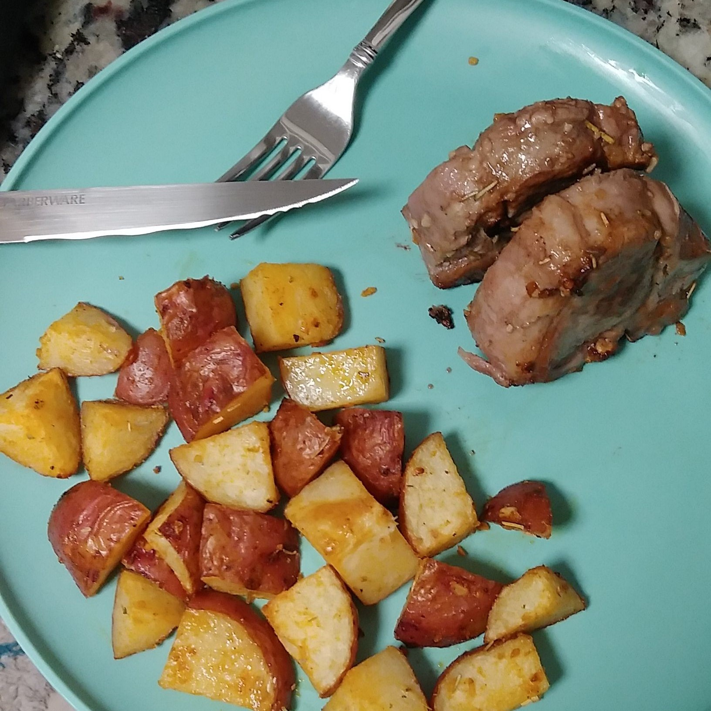

Seared Lamb with Roasted Potatoes

Select the image to go back to the main screen.
Ingredients
- 8 Lamb Chops
- Olive Oil
- Dried Rosemary
- Minced Onion
- Minced Garlic
- 1 bag Baby Red Potatoes
- pPaprika
- Cayenne Pepper
- Garlic Salt
- Onion Powder
- Garlic Powder
- Oregano
Directions
- Marinate lamb chops in a large bowl with olive oil, dried rosemary, minced garlic, and minced onion for a
minimum of 1 hour.
- Preheat the oven to 425 degrees.
- Cut baby red potatoes into ~1 inch pieces.
- Boil potatoes on medium-high heat for 7 to 8 minutes.
- Drain and toss potatoes in paprika, cayenne, garlic salt, onion powder, garlic powder, and oregano with a
drizzle of olive oil.
- Spread potatoes on a sprayed cookie sheet and roast for 20 minutes.
- In a skillet on high heat, sear lamb chops for 3 minutes on each side until internal temperature reaches 150
degrees.
- Remove lamb chops from heat and allow to rest.
- Serve with potatoes and a red wine!
>
© 2021 Victoria Rhodes